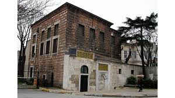

Okudugu Yerler
Atatürk’ün Gittiği Okullar
Mustafa Kemal Atatürk’ün öğrenim hayatı ilk olarak, annesi Zübeyde Hanım’ında isteği üzerine 1887 yılında, Hafız Mehmed Efendi Mahalle Mektebinde başlamış ve 1905 yılında kurmay yüzbaşı olarak mezun olduğu Harp Akademisi’ne kadar devam etmiştir. Atatürk’ün gittiği okullar kronolojik sırayla şu şekildedir:
- Hafız Mehmed Efendi Mahalle Mektebi
- Şemsi Efendi Mektebi
- Selanik Mülkiye Rüştiyesi
- Selanik Askeri Rüştiyesi
- Manastır Askeri İdadisi
- İstanbul Harp Okulu
- İstanbul Harp Akademisi
